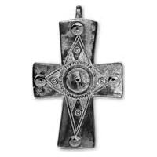
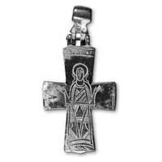

Catalog › CE-0427 · SYR2012-4
Encolpion bivalv de aliaj de cupru, cat. 4, NMIU Kiev
sec. X–XI (901–1100) · loc necunoscut · Muzeul Național de Istorie a Ucrainei (НМИУ), Kiev; colecția „siriană” B. I. și V. N. Hanenko, inv. valva anterioară: в 4626/286 (4099); valva posterioară: в 4626/330 (4247)
double-sided reliquary cross (enkolpion), altul; c. X–XI (901–1100); find spot unknown; kept at Muzeul Național de Istorie a Ucrainei (НМИУ), Kiev; colecția „siriană” B. I. și V. N. Hanenko.




Identificare
- Categorie
- Encolpion bivalv (relicvar)
- Material
- Altul
- Tehnică
- Gravare (incizie); Ștanțare
- Dimensiuni
- Î 64 × L 44 × Gr 10 mm
Iconografie
- Avers
- Ornament geometric
- Descriere avers
- Compoziție în cruce formată din patru triunghiuri decorative egale, cu cuiburi circulare pentru inserții (d 0,6 cm) la vârfuri și un cuib mare central (d 1,15 cm); triunghiurile sunt hașurate și decorate cu cercuri concentrice.
- Revers
- Maica Domnului Orantă
- Descriere revers
- Maica Domnului Orantă cu inscripția pe brațul de sus, între două linii paralele; nimb neornamentat, de la care două linii curbe coboară spre umeri (posibil maforion); veșmânt lung cu brâu, bogat decorat cu hașuri în mai multe direcții, benzi ornamentale, compoziții triunghiulare și rânduri de mici amprente triunghiulare; picioarele îndreptate spre laturi. Marginile brațelor laterale poartă linii paralele drepte; la capătul de sus, aceleași linii formează un cadru pentru inscripție. Imaginile și inscripțiile sunt incizate adânc și imprimate cu ștanța.
- Inscripții
- [H]ΘЄOΤOKOC
- Limba
- Greacă
Datare și atribuire
- Datare
- sec. X–XI (901–1100)
- Tipologie
- cruce-relicvar cu brațe drepte, cu oglavie turnată într-un singur corp
Descoperire
- Context
- Colecție (fără context)
- Coordonate
- 50.4536° N, 30.5164° E
- Precizia locului
- Loc de păstrare (loc de descoperire incert)
Păstrare și referințe
- Colecție
- Muzeul Național de Istorie a Ucrainei (НМИУ), Kiev; colecția „siriană” B. I. și V. N. Hanenko
- Nr. inventar
- valva anterioară: в 4626/286 (4099); valva posterioară: в 4626/330 (4247)
- Bibliografie
- A. A. Пескова, Л. В. Строкова, Христианские древности Византии в «Сирийской коллекции» Б. И. и В. Н. Ханенко, Sankt-Petersburg–Kiev, 2012, 225 p. [Peskova, Strokova 2012], p. 66, cat. nr. 4, ilustrația (fotografie și desen) de la p. 66.
- Figura
- ilustrația la cat. nr. 4
- Planșe
- Peskova, Strokova 2012, p. 66
- Observații
- Cruce-relicvar cu brațe drepte ușor evazate; oglavie turnată în formă de mărgea cilindrică pe o bază trapezoidală. Pe interiorul valvei anterioare, cinci perforații la locul cuiburilor și o ușoară bombare la locul cuibului central. Urechile de jos rupte; urme de tăiere pe marginea laterală a capătului de jos al valvei posterioare; patinată, local oxidată. Autoarele consideră cele mai apropiate analogii crucile de la Samsun/Amisos și din colecția Ermitaj (inv. ω-319); analogii directe lipsesc. Tehnica: Gravare și amprente de ștanță. Dimensiuni în sursă (în paranteză, înălțimea cu urechile): 6,4 (7,2)×4,4 cm; 6,4 (7,25)×4,4 cm; lungime cu oglavie 9,0 cm; grosime 0,95–1,0 cm. Vechiul număr de inventar al Muzeului de Artă Hanenko (1925) este cel din paranteză. Album Hanenko, vol. III (needitat): valva anterioară tabla XLIII, nr. 440; valva posterioară tabla XLVII, nr. 481. Atribuirea autoarelor: Orientul Apropiat, sec. X–XI. Locul descoperirii nu este dat în sursă. Material în sursă: aliaj de cupru. Locul descoperirii nu e cunoscut cu precizie; punctul de pe hartă marchează locul de păstrare (Muzeul Național de Istorie a Ucrainei), nu locul descoperirii. Coordonate: nu sunt date în sursă.
Citare: Corpus Encolpiorum, CE-0427, Encolpion bivalv de aliaj de cupru, cat. 4, NMIU Kiev, --root/piese/SYR2012-4/ (accesat 2026-10-17).